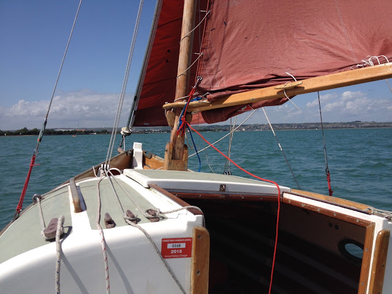

Every month, to my surprise, I suddenly
find I have this blog to write and I haven't got a clue. This month, what we
writers laughingly call the pressure is even greater than usual, because I'm
flying off to Berlin in a day or two, and I have other vital things to finish.
Aw! It's me I feel sorry for…
Sometimes, though, the suffering of other
people is brought home with a bang. Julia Jones’s gruelling and frighteningly
honest piece on the 9th was a case in point. It was hard to read,
and harder to digest. I left a comment because I wanted to show some
solidarity, but I had not a clue what to say. Julia is wonderful, one of those
people who makes one feel inadequate. I can only thank her for it.
| Good things can happen though. Northern Lights near Oldham |
{kind=link}
Another terrific writer who has this effect on me is Mark Frankland - and he also runs a charity in
Dumfries for victims of the military life. Not people who have been attacked or injured by the forces in the normal course of what they do, but those in the forces themselves who have
fallen by the wayside in the aftermath of serving their country. The suffering
and deprivation of these men and women who have done their best is horrifying.
Here's an extract of his latest blog, which went up on March 2. I’ve edited it
for space reasons.
Mark Frankland wrote:
Over the last thirteen years working at First Base I have been
left feeling angry and appalled too many times to count. Angry and appalled at
the way people are treated. Angry and appalled at the casual cruelty of our
supposedly caring State. Angry and appalled at the way faceless bureaucrats seem
to think it is OK to step on vulnerable people as if they are human
cockroaches.
And anyone who has read this blog of mine over the years will
know where I am coming from. And at times it is easy to slip into the same kind
of zone that A&E nurses probably live in. You get to thinking that you have
already seen the worst of the worst. You get to thinking that nothing to come
can be worse than what has already been.
But to be honest to think like that would be pretty bloody
naïve. And so it was that on a cold day in December I drove up to Edinburgh to
meet up with Sam.
I have only met [him] once before and it was
very brief. It was on one of the very worst of days. The day we said goodbye to
James.
James, the youngest client of our Veterans
Project. James, who could have been tearaway, who took the King’s Shilling and
signed up. James who stood tall and magnificent on a hard, hard tour of Helmand
Province. James who left the army when his dad died because his mum needed him.
James who was one of the most decent guys it has ever been my honour to meet.
James whose conscience and soul could not handle what he had seen and done on
that hard, hard tour of Helmand Province. James who took his own life at 23
years old on a bone cold January night.
His brothers in arms from the Regiment came
down to carry his coffin under the cold grey January skies.
And Sam was one of the band of brothers. I can
still picture him that day. Clearly. He was so tall it made carrying James
awkward. Sam the six foot five Fijian with the ramrod back. A face as hard as
one of those Easter Island statues. But his eyes. His eyes were windows onto a
grief stricken soul.
And I remember standing at the grave side and
thinking what a crazy world we live in. Sam. The warrior from a warrior tribe.
So many thousands of miles from his South Sea home. Tall and like a king from a
Kipling story. Still as a rock. Saying his goodbyes to a fellow warrior.
On a cold, cold day.
In Dumfries.
In Scotland.
James’s mum Nicola called me a few weeks ago.
She said she had been talking to Sam on Facebook. She said Sam is out of the
Army now. Out in the cold. And things are not so good. Pretty bad in fact.
Could First Base do anything? I said we would do our best.
But no promises. Other than the promise to
drive up to Edinburgh to meet him. He
is waiting for me.
[Sam] remembers [that] when they got him to
sign the dotted line in Fiji they said that four years served would mean
guaranteed citizenship.
He served nine years.
Iraq. The Falklands. Northern Ireland.
Afghanistan.
The same hard, hard Helmand Tour as James.
With James. He did the hardest of hard miles. And every month his salary had
income tax and National Insurance deducted. Like he was a citizen.
But when he left the army in 2012 he learned
the hard way that the British Establishment tell lies.
Citizenship? Who told you that? Good lord. I
very much doubt it…
Well. You’ll just have to apply along with all
the rest, won’t you? But don’t hold your breath. We’re not overly keen on your
type to be frank. No money? No thought not.
So Sam applied. Three years ago. And for three
years they have made him sign on. But his was a different sort of sign on.
Every Monday he walks six miles into Edinburgh city centre to sign his name in
a police station. Like a common criminal. Like a terrorist. Like scum. And then
he walks six miles home again.
And he waits.
He receives not a penny and he has been told
in no uncertain terms that should he do so much as an hour’s work he will be on
a plane back to Fiji before he gets the chance to blink.
His partner has left him and she doesn’t let
him see his son. His son is five now. The last picture Sam has is of a three
year old.
He has another girlfriend now and she pays the
bills. They share one room over a pub. They share a mattress on the floor. And
Sam watches TV all day. And one by one the demons of those hard, hard Helmand
days are starting [to] crawl into his head like maggots.
I promise that I will try to do what I can. We stand and shake hands. Maybe there is a faint smile. Maybe
not. He thanks me and I feel terrible.
I get in my van and drive south.
And all the way back I remember him in that
cold graveyard on that cold January day. Like a statue. Like a king. Like a
warrior. So very far from home. Saying goodbye to an unlikely brother in arms.
But a brother all the same.
After Frankland had written this,
things deteriorated. A fellow tenant in Sam’s block turned out to be a psychopath,
who smashed in the back of his head with a claw hammer. His girlfriend Kirsty called an ambulance, and he was saved. The
psychopath was charged with attempted murder – but later bailed. He then
threatened the landlord, who evicted Kirsty. No notice, nothing. Just go.
When Sam was discharged from hospital he was homeless, naturally.
When Sam was discharged from hospital he was homeless, naturally.
‘Not merely a non person now, a homeless non person. They walked the streets to the homeless
department. They were told that a box room was going to be £100 a night because
Kirsty was working and Sam didn't officially exist. And it was only for one
night anyway.’
What’s more, the psychopath was still on the look out for them.
Mark Frankland, and First Base, continued fighting. He finally got
two MPs interested, and engineered a breathing space. A room for a week. A stay
of execution.
And so yet
again I am left with nothing to do other than to slam my keyboard with the
words you are reading now. If there is anyone out there who can help in any way
at all please let me know. And if there are any reporters out there who can
take Sam's story to a wider audience please get in touch. I asked him if we
would be willing to allow the press to tell his story. He is. He will. And I'll
tell you what guys, he'll take a hell of a photo. A six and a half foot warrior
version of Marvin Gaye.
He
deserves so much more than this. Now he needs a clamour. Angry voices. Justice
and fairness demanded.
Because
everything about this is just so very, very wrong.
The
First Base Agency would be more than happy to pass on any donations to Sam.
Cheques to The First Base Agency can be sent to 6 Buccleuch St, Dumfries,
DG12AH. The First Base Agency - TSB -
Sort Code - 30-25-88 Acc No - 00533183.
{kind=link}

PS Anybody fancying a PDF of my new thriller The Bonus Boys with a view to doing a quickie Amazon review email me at jan.needle@gmail.com Some of it takes place near this beautiful idyllic harbour, and it's 'orrible.